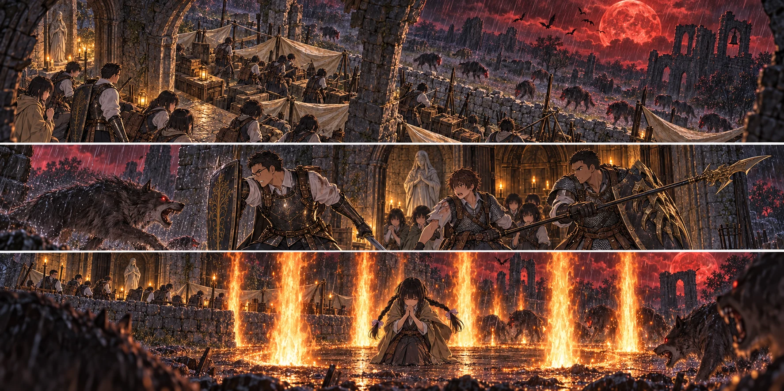

DAY90夜 → DAY91朝 / TURN1−100
赤い雨の、三歩。

先生「呼んだだけじゃ交代にならない。相手が、見たか」
【DAY90｜朝、使わなかった力】先生が机へ並べたのは、旅の途中からずっと持っていた四つの追憶だった。勝利のたびに増えて、それきり手をつけなかった光。惜しんでいたのか、使い方を決める余裕がなかったのか。どちらにしても、荷物の中で百日目を迎えさせるつもりはなかった。
接ぎ木、満月の女王、忌み王。三つをルーンへ変え、共同財布へ七千を加える。神授塔へ持っていくゴドリックの大ルーンは、別の包みのまま残した。消したのは、戦いから得た追憶だ。王たちが握っていた大ルーンそのものではない。
先生は自分が登録している円卓へ向かった。指読みエンヤへ火の巨人の追憶を差し出す。受け取ったのは鞭ではなく、地から火柱を呼ぶ祈祷だった。教会へ持ち帰り、紬へその祈りを伝える。この世界で仲間に力を託す方法であり、紬が円卓への転送を覚えたわけではなかった。
【紬｜手を離すための祈り】信仰を二つ伸ばし、二十七へ。初めて唱えた時、紬は自分の足元が熱くなることに驚いた。遠くへ投げる火ではない。周りの地面が膨れ、離れて立っていた皆の顔を下から照らした。先生が作らせた空白の中で、火柱が何本も立ち上がった。
「これ、誰かが隣にいたら使えません」。紬はすぐに言った。葵が頷いた。「だから、使ってほしい時だけ場所を空けよう」。回復役が強い術を覚えたから、皆の治療を忘れてよくなるわけではない。一度使えば、残せる余力は小さな治療一回。その配分を、紬は自分で口にして確かめた。
【交代役の育成｜2d6＝5・3＋4＝12】健太と陽太を七十まで育てた。二人分で四千ルーン、紬の分が四百。生命と持久力へ絞った成長を、先生は剣を向ける前に、歩幅と息の戻り方で確かめた。大きな盾を持つ健太にも、槍を持つ陽太にも、最後まで受けきる練習はさせなかった。
先生が短く踏み込み、陽太が横から棒を当てる。先生の目線がそちらへ動く。その瞬間だけ健太が離れる。逆も行った。二人で先生を左右へ引っ張り合わないこと。引き受ける者の呼吸が整っていること。「呼んだだけじゃ交代にならない。相手が、見たか」。先生はそこを繰り返した。
陽太は黒炎を使う構えに入りかけ、槍を戻した。囮をしている最中に両手を塞ぐ技を出せば、待っていた次の一撃を避けられない。「引き受けている時は、回らない」。自分の言葉にすると、強くなった分だけやりたくなることを、一つ止められた。
【日暮れ】今日は狩りへ出なかった。水は昼のうちに汲み、処理して配り、保存分を残した。練習で使った力は夕方の祝福で戻す。紬は火の祈りと治療を合わせて三つ分、葵も回復の余力を持ち直した。全員が教会の内外、決めた持ち場に揃った。
赤い月は雲の奥から浮かび上がった。以前なら屋根の割れ目に収まっていた光が、今夜はその縁からはみ出すように見える。最初の雨粒が、先生の眼鏡に落ちた。袖で拭くと、次の一粒も赤かった。空の色を映しているだけか。それとも水そのものが変わったのか。確かめるために舐める者はいなかった。
【風雨への備え｜2d6＝3・6＋5＝14】誠の直した雨樋が鳴った。水は寝床を横切らず、壁の外へ流れていく。結菜と楓が押さえた布も、低く積んだ石も残った。食料を高い板へ載せた凛は、箱の底が濡れていないことを手で確かめた。間に合った。昨日、地味な作業を終わらせておいてよかった。
だが雨の音は、足音も消した。いつもなら草を踏む音で気づく距離まで、狼が来ていた。北の低い開口部で盾が一枚持ち上がる。同じ時、割れた屋根の向こうで蝙蝠の影が重なった。外を見ていた目が上を向き、その隙間へ獣が潜り込んだ。
【防衛｜自然出目1・1。確認1・4＝5】「北、内側！」。健太の声に、陽太が振り返った。槍先で一頭を止めたが、二頭目を見た時には近すぎた。袖が引かれ、腕の皮膚を牙がかすめる。痛みより先に、槍の握りが緩んだ。教会の中へ下がれば、寝床と箱がある。そこで足を止めてしまった。
「陽太、代わる」。先生の盾が横から入った。肩を並べたのは一瞬だけだった。「足を動かせ。健太が見てる」。昼間なら十回でもできた動きが、今は一度だけひどく難しい。陽太は自分の腕を見ず、健太の空けた道を見た。赤瓶を取れる場所まで、三歩下がった。
花と千夏は屋根際へ射線を移した。入口を守る者を矢越しに狙わず、空いた方向だけを射る。悠と拓海の青い光が、羽ばたく影を一つずつ追った。それでも混乱の中、食料箱が倒れ、濡れた土へ中身が散った。凛は反射的に手を伸ばし、すぐに引いた。食べ物を拾って頭を晒すより、箱の後ろの人を動かす方が先だった。
「紬、ここを空ける！」。先生が一歩外へずれた。健太は狼を盾の真正面で止め続けず、槍で距離を取りながら石壁側へ移る。紬の周りに、昼と同じ空白ができた。違うのは、その向こうから獣が飛び込んでくることだった。
紬は屈んだ。祈りを途中で早口にしない。雨に濡れた石の間から火が噴き上がり、獣の影が炎の向こうへ消えた。手から光を撃つ術ではなかった。逃がしてもらった足元、その場所そのものが燃えた。熱風が前髪を跳ね上げる。紬は立ち上がると、残していた一度の治療を陽太へ使った。
【立て直し｜2d6＝1・4＋5＝10】葵が内側の負傷者を診て、治療を一度加える。結衣は人数を数えながら持ち場を割り直した。翼が屋根を指し、航と亮が最後の羽音を追う。足元を這う雨水は赤く、盾にぶつかる音は近かったが、もう全員が同じ穴へ集まってはいなかった。
陽太はすぐに前へ戻ろうとした。「今は休め」。先生の声は短かった。昼に決めた交代は、失敗した者を罰する順番ではない。治療を受けた者に、治療を無駄にしない時間を渡す仕組みだった。陽太は槍を握り直し、出口を見張る位置に留まった。
夜が薄れるまでに、狼十二頭と大蝙蝠六体を倒した。矢は二十四本減り、食料六食分は泥と雨で失われた。赤い雨を浴びた肉を、新たな食料に数えはしない。新しく失った命はなかった。そう言えることと、楽な夜だったことは、まるで別だった。
【DAY91｜夜明け】休息を終え、陽太は治った腕を曲げた。怖かった、と言う代わりに先生を見た。「交代、できましたね」。先生は一度頷いた。「できた。次も、頼む。その代わり、無理な時は言ってくれ」。陽太の返事は、昨夜より少し遅く、はっきりしていた。
三十三人を数え終えた結衣が、帳面を閉じる。九千百六十四ルーン、矢四百七十二本、食料五十六食分。次の旅の前には食料を足さなければならない。赤月を越えたからといって、教会の仕事が終わったわけでもない。東の空が白くなり、割れた壁の影に、朝日とは違う光が差し始めた。
今回の判定記録
| 判定 | 出目 | 補正 | 合計 |
|---|
| reliefTraining | 5+3 | 4 | 12 |
| weather | 3+6 | 5 | 14 |
| defense | 1+1 | 5 | 7 |
| recovery | 1+4 | 5 | 10 |
抽選前の条件 · 抽選結果